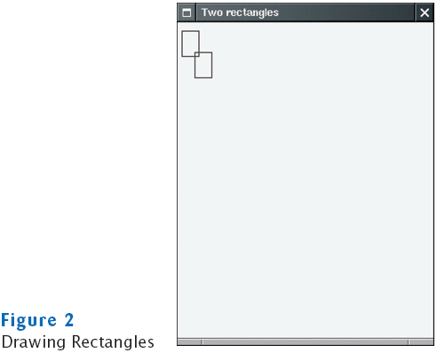

Chapter 5
Programming Graphics
Chapter Goals
- To be able to write simple applications
- To display graphical shapes such as lines and ellipses
- To use colors
- To display drawings consisting of many shapes
- To read input from a dialog box
- To develop test cases that validate the correctness of your
programs
Frame Windows
A Frame Window
File EmptyFrameViewer.java
Self Check
- How do you display a square frame with a title bar that reads "Hello,
World!"?
- How can a program display two frames at once?
Answers
- Modify the EmptyFrameViewer program as follows:
frame.setSize(300, 300);
frame.setTitle("Hello, World!");
- Construct two JFrame objects, set each of their sizes,
and call setVisible(true) on each of them
Drawing Shapes
Drawing Shapes
Drawing Rectangles

Rectangle Drawing Program Classes
- RectangleComponent: its paintComponent method
produces the drawing
- RectangleViewer: its main method constructs a
frame and a RectangleComponent, adds the component to the
frame, and makes the frame visible
- Construct a frame
- Construct an object of your component class:
RectangleComponent component = new RectangleComponent();
- Add the component to the frame
frame.add(component);
However, if you use an older version of Java (before Version 5), you
must make a slightly more complicated call:
frame.getContentPane().add(component);
- Make the frame visible
File RectangleComponent.java
File RectangleViewer.java
Self Check
- How do you modify the program to draw two squares?
- How do you modify the program to draw one rectangle and one
square?
- What happens if you call g.draw(box) instead of g2.draw(box)?
Answers
- Rectangle box = new Rectangle(5, 10, 20, 20);
- Replace the call to box.translate(15, 25) with box
= new Rectangle(20, 35, 20, 20);
- The compiler complains that g doesn't have a draw
method
Applets
Applets
- This is almost the same outline as for a component, with two
minor differences:
- You extend JApplet, not JComponent
- You place the drawing code inside the paint method,
not inside paintComponent
- To run an applet, you need an HTML file with the applet
tag
- An HTML file can have multiple applets; add a separate applet
tag for each applet
- You view applets with the applet viewer or a Java enabled browser
appletviewer RectangleApplet.html
File RectangleApplet.java
File RectangleApplet.html
File RectangleAppletExplained.html
Applets
Graphical Shapes
- Rectangle, Ellipse2D.Double, and Line2D.Double
describe graphical shapes
- We won't use the .Float classes
- These classes are inner classes–doesn't matter to us except for
the import statement:
import java.awt.geom.Ellipse2D; // no .Double
- Must construct and draw the shape
Ellipse2D.Double ellipse = new Ellipse2D.Double(x, y, width, height);
g2.draw(ellipse);
An Ellipse

Drawing Lines
- To draw a line:
Line2D.Double segment = new Line2D.Double(x1, y1, x2, y2);
or,
Point2D.Double from = new Point2D.Double(x1, y1);
Point2D.Double to = new Point2D.Double(x2, y2);
Line2D.Double segment = new Line2D.Double(from, to);
Drawing Strings
g2.drawString("Message", 50, 100);

Self Check
- Give instructions to draw a circle with center (100,
100) and radius 25
- Give instructions to draw a letter "V" by drawing two line
segments
- Give instructions to draw a string consisting of the letter "V"
Answers
- g2.draw(new Ellipse2D.Double(75, 75, 50, 50);
-
Line2D.Double segment1 = new Line2D.Double(0, 0, 10, 30);
g2.draw(segment1);
Line2D.Double segment2 = new Line2D.Double(10, 30, 20, 0);
g2.draw(segment2);
- g2.drawString("V", 0, 30);
Colors
- Standard colors Color.BLUE,
Color.RED, Color.PINK etc.
- Specify red, green, blue between 0.0F and 1.0F
Color magenta = new Color(1.0F, 0.0F, 1.0F); // F = float
- Set color in graphics context
g2.setColor(magenta);
- Color is used when drawing and filling shapes
g2.fill(rectangle); // filled with current color
Self Check
- What are the RGB color values of Color.BLUE?
- How do you draw a yellow square on a red background?
Answers
- 0.0F, 0.0F, and 0.1F
- First fill a big red square, then fill a small yellow square
inside:
g2.setColor(Color.RED);
g2.fill(new Rectangle(0, 0, 200, 200));
g2.setColor(Color.YELLOW);
g2.fill(new Rectangle(50, 50, 100, 100));
Drawing Complex Shapes
Drawing Cars

Plan Complex Shapes on Graph Paper

File CarComponent.java
File Car.java
File CarViewer.java
Self Check
- Which class needs to be modified to have the two cars
positioned next to each other?
- Which class needs to be modified to have the car tires painted in
black, and what modification do you need to make?
- How do you make the cars twice as big?
Answers
- CarComponent
- In the draw method of the Car class, call
g2.fill(frontTire);
g2.fill(rearTire);
- Double all measurements in the draw method of the Car
class
Drawing Graphical Shapes

Rectangle leftRectangle = new Rectangle(100, 100, 30, 60);
Rectangle rightRectangle = new Rectangle(160, 100, 30, 60);
Line2D.Double topLine
= new Line2D.Double(130, 100, 160, 100);
Line2D.Double bottomLine
= new Line2D.Double(130, 160, 160, 160);
Reading Text Input
File ColorViewer.java
File ColoredSquareComponent.java
Output
Self Check
- Why does this program produce three separate dialog
boxes instead of inviting the user to type all three values in a single
dialog box?
- Why does this program place the showInputDialog call
into the main method of the ColorViewer class and
not into the paintComponent method of the ColorComponent
class?
Answers
- If the user entered a string, such as "1.0 0.7
0.7", you would need to break it up into three separate strings.
That can be done, but it is more tedious to program than three calls to
showInputDialog.
- You don't want the dialog boxes to appear every time the
component is repainted.
Comparing Visual and Numerical Information
- Compute intersection between circle and vertical line
- Circle has radius r = 100 and center (a, b)
= (100, 100)
- Line has constant x value
- Calculate intersection points using mathematics:
Equation of a circle with radius r and center point (a, b)
is

If you know x, then you can solve for y:
Comparing Visual and Numerical Information
Intersection of a Line and a Circle
File IntersectionComponent.java
File IntersectionViewer.java
File LabeledPoint.java
Self Check
- Suppose you make a mistake in the math, say, by using
a + sign instead of a - sign in the formula for root. How can you tell
that the program does not run correctly?
- Which intersection points does the program draw when you provide
an input of 0?
Answers
- The intersection points will be drawn at a location
that is different from the true intersection of the line and the circle
- The point (0, 100) is drawn twice